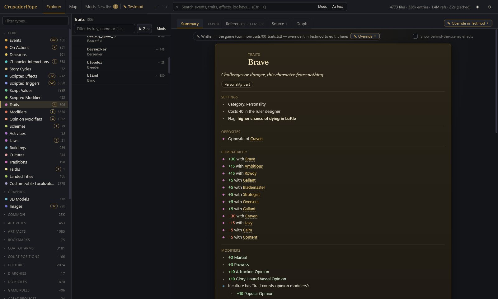
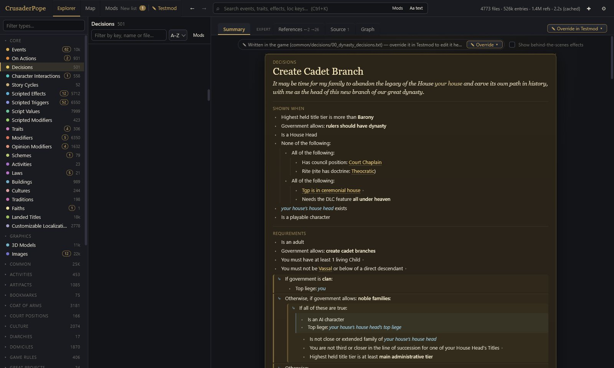
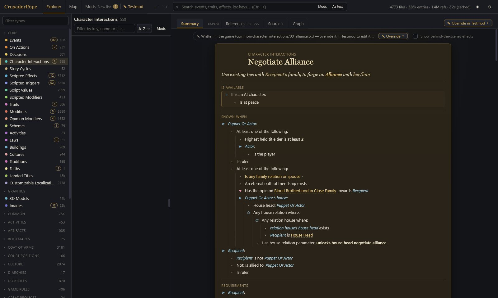
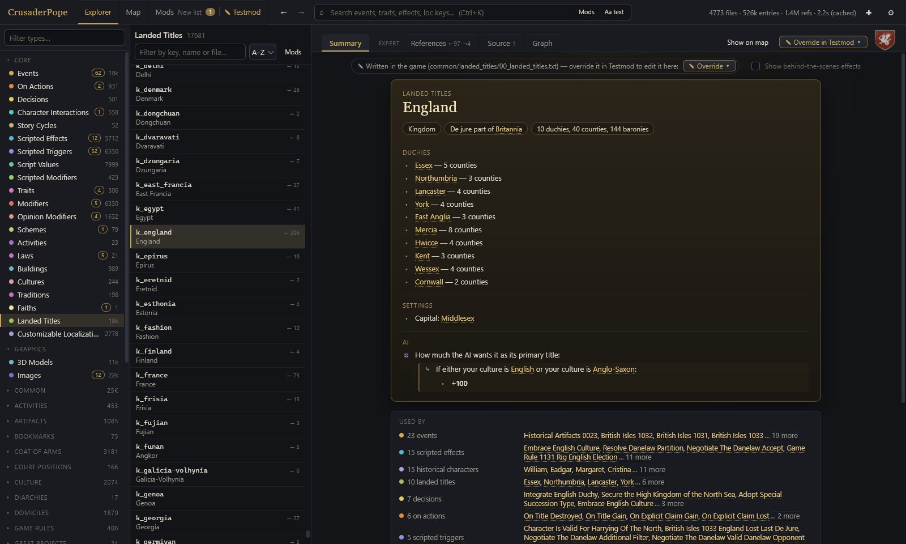

Readable view
Script, turned into plain language
Every entry gets a Summary that reads like the game itself: “Gains 50 Prestige”, “If the character is an adult: …”. Events become a timeline of their text, conditions and options; traits, decisions, interactions and titles show what they do, not how they are written.
- Events, decisions, traits, interactions, laws, faiths, cultures, characters, titles, modifiers, scripted effects …
- Conditions shown as “Only happens if”, effects as what they change
- Game icons and event illustrations right where they belong








